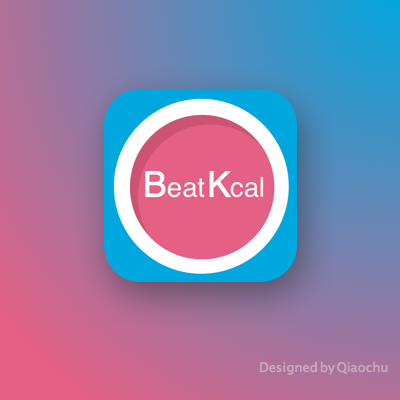
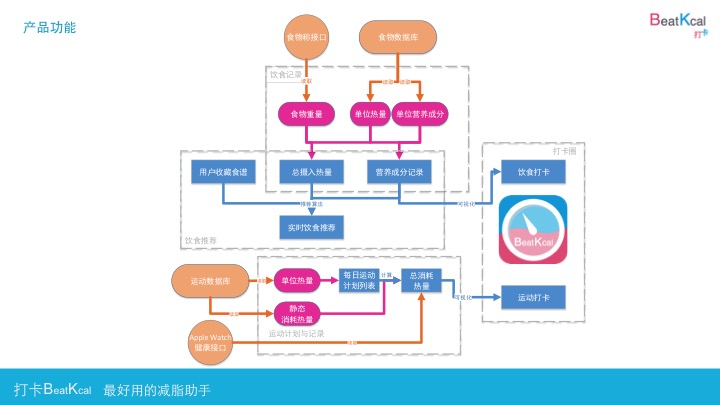
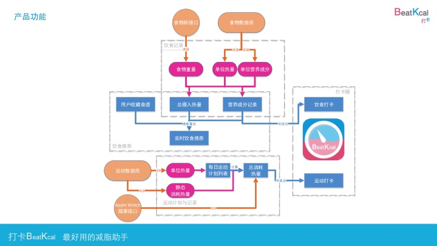

Armed with previous experiences, I challenged myself by participating in an APP design competition and won the Best Design award.
Competing with mature teams with startup experience, my team was required to complete the entire process from idea creation to product implementation in one month.
 
